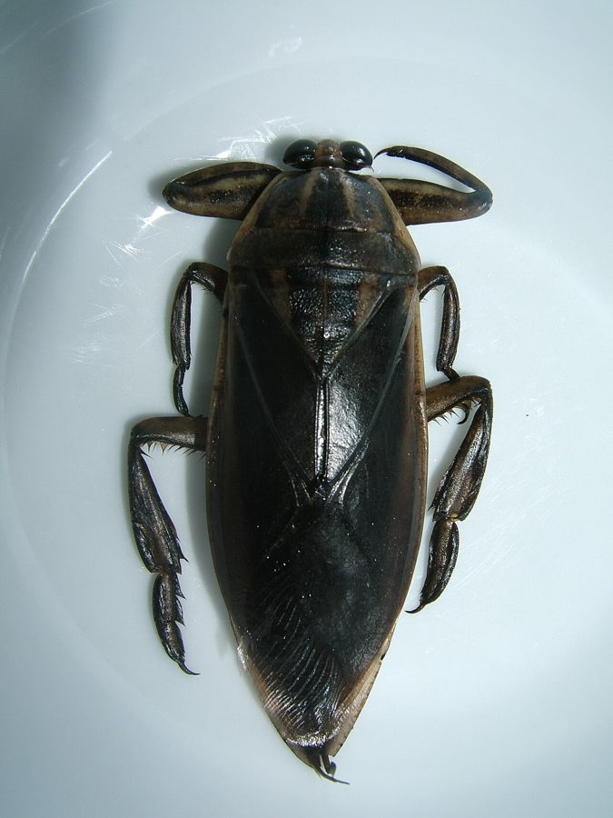

बड़ा पानी का कीड़ाGiant Water Bug
Lethocerus indicus · Belostomatidae · INS-0050

- Scientific nameवैज्ञानिक नाम
- Lethocerus indicus (Lepeletier & Serville, 1825)
- Familyकुल
- Belostomatidae
- Hindiहिंदी
- बड़ा पानी का कीड़ा
- Local namesस्थानीय नाम
- pani ka keeda, bada pani ka keeda, pani ka bichhu
- Status hereयहाँ की स्थिति
- native
- Movementआवागमन
- Resident, here all year
- IUCNIUCN
- not evaluated
- Reviewसमीक्षा
- audited and independently read
When to look कब देखें
Expected mainly in March, April, May, June, July, August, September, October, November.मुख्यतः मार्च, अप्रैल, मई, जून, जुलाई, अगस्त, सितंबर, अक्टूबर, नवंबर में अपेक्षित।
Uses and possibilities उपयोग और संभावनाएँ
Drawn from the documented uses in the profile below, where each is labelled traditional, current or a research lead. All uses →
बड़ा पानी का कीड़ा / Giant Water Bug
Lethocerus indicus (Lepeletier & Serville, 1825) — Belostomatidae
बड़ा पानी का कीड़ा — भारत का सबसे बड़ा कीट-शिकारी जो पानी में रहता है: छह से आठ सेंटीमीटर का, चपटा, भूरा, नाव जैसा, आगे के पैर मछली और मेंढक के बच्चे दबोचने के लिए चिमटे जैसे, पीछे के पैर चप्पू जैसे। बरसात की रातों में ट्यूबलाइट के नीचे उड़कर आ गिरता है और गाँव के बच्चे इसे "पानी का बिच्छू" कहकर डरते हैं। इसका डंक दर्दनाक है पर ख़तरनाक नहीं। पूर्वोत्तर भारत और थाईलैंड में यह खाया जाता है।
Quick Identification त्वरित पहचान
| Feature | Description |
|---|---|
| Size | 60–80 mm long, the largest true bug in India |
| Shape | Flat, oval, boat-like; brown to olive-brown with faint darker mottling |
| Front legs | Thick, folded, raptorial, like a mantis's, for seizing prey |
| Hind legs | Flattened and fringed with hairs, used as oars |
| Head | Short, with a stout sucking beak folded beneath; large eyes |
| Tail end | Two short retractable breathing straps that are pushed to the surface for air |
| Behaviour | Hangs head-down under the surface with the tail tip at the air; flies strongly at night |
Field tip: Under a bulb on a monsoon night, the huge flat brown bug lying stunned on the floor, bigger than a matchbox, is this. In a pond it hangs motionless among weeds with its tail at the surface. Do not pick it up bare-handed; the beak gives a bite worse than a wasp sting.
हिंदी — कैसे पहचानें: बरसात की रात बल्ब के नीचे माचिस से बड़ा चपटा भूरा कीड़ा; आगे चिमटे जैसे पैर, पीछे चप्पू जैसे; तालाब में सिर नीचे, पूँछ सतह पर लटका रहता है। नंगे हाथ न पकड़ें — चोंच का डंक ततैये से ज़्यादा दर्द देता है।
Morphology आकारिकी
Biometrics (Indian populations):
| Measurement | Range |
|---|---|
| Body length | 60–80 mm |
| Body width | 22–30 mm |
| Front femur length | 15–20 mm |
| Egg length | 3–4 mm |
| Weight | 3–6 g |
Body: Dorsoventrally flattened, the forewings leathery at the base and membranous at the tip, folded flat over the back; the hindwings large and functional, so the adult flies between ponds and is drawn to lights.
Mouthparts: A short, strong, four-segmented rostrum injecting saliva that paralyses and digests prey; the bug sucks the liquefied contents.
Legs: Forelegs raptorial with a single claw; middle and hind legs flattened, hairy, swimming legs. The tarsi of the hind legs have two claws.
Breathing: Two short, flat, retractable appendages at the abdomen tip form a channel through which air reaches the spiracles while the body stays submerged; air is also stored under the wings.
हिंदी: शरीर चपटा, अगले पंख आधे चमड़े जैसे आधे झिल्ली; पिछले पंख पूरे, इसलिए उड़कर तालाब बदलता है। चोंच छोटी, मज़बूत, लार से शिकार को बेहोश करके घोल देती है और चूस लेती है। पूँछ पर दो छोटी पट्टियाँ साँस की नली का काम करती हैं।
Behaviour & Ecology व्यवहार और पारिस्थितिकी
An ambush predator at the top of the pond's invertebrate food web. It waits among weeds or on a submerged stem, seizes anything that passes, tadpoles, small frogs, fish fry and fingerlings, snails, other water bugs and beetles, and has been recorded taking small snakes and ducklings. A big bug can subdue a fish several times its own weight.
In the monsoon the adults disperse by night flight, which is when they crash into lit verandahs and bathrooms. Eggs are laid above the waterline on emergent stems, and the male guards and wets them until they hatch, an unusual paternal care that is the mark of the family. It is itself eaten by Indian Pond Heron, White-throated Kingfisher, large frogs and catfish.
हिंदी: तालाब में घात लगाकर शिकार करने वाला सबसे बड़ा कीट। मेंढक के बच्चे, छोटी मछलियाँ, घोंघे, दूसरे कीड़े — जो पास आए उसे दबोच लेता है; अपने से कई गुना भारी मछली तक। बरसात में रात को उड़कर तालाब बदलता है, तभी घरों में आ गिरता है। मादा अंडे पानी के ऊपर डंठल पर देती है और नर उनकी रखवाली करता और भिगोता है। बगुला, किलकिला और मछलियाँ इसे खाते हैं।
Life Cycle / Phenology जीवन चक्र
| Month / season | Event |
|---|---|
| March–May | Adults active and feeding as ponds warm |
| June–September | Mating; eggs laid in clusters of 50–150 on stems above water; male guards them |
| 1–2 weeks | Eggs hatch; nymphs drop into the water |
| 1–2 months | Five nymphal stages, each a smaller version of the adult without wings |
| October–November | New adults; dispersal flights |
| December–February | Adults overwinter in mud and vegetation, mostly inactive |
हिंदी: बरसात में अंडे डंठल पर, नर रखवाली करता है; हफ़्ते-दो हफ़्ते में निम्फ़ निकलकर पानी में गिरते हैं; एक-दो महीने में पाँच बार केंचुल बदलकर वयस्क; सर्दी कीचड़ में निष्क्रिय।
Host Plants or Prey आहार
- Tadpoles and frogs: Asian Common Toad, Indian Bull Frog, Skittering Frog.
- Fish: fry and fingerlings of Rohu and other pond fish; a known pest of fish nurseries.
- Invertebrates: Freshwater Apple Snail juveniles, Indian Water Strider, dragonfly nymphs of Ditch Jewel and Scarlet Skimmer, diving beetles.
Predators / Natural Enemies शत्रु
- Birds: Indian Pond Heron, White-throated Kingfisher, Pied Kingfisher, Black Drongo at lights.
- Fish and frogs: large catfish, Indian Bull Frog.
- People: collected for food in Assam, Manipur and Thailand; sold by the basket in Bangkok markets.
- Parasites: egg parasitoid wasps; mites on the body.
Agricultural / Human Relevance कृषि प्रासंगिकता
The bite. The bug bites when handled or trodden on in a pond, injecting the same saliva it uses on fish; the pain is sharp and lasts hours, and the spot may swell, but it is not dangerous. Wash the site; no further treatment is normally needed. Children who catch "the thing under the light" should be shown how to lift it by the sides of the body or with a cloth.
Fish farming. In nursery ponds it is a real pest, taking fry and spawn; hatcheries screen inlets and net the bugs. In a village pond its predation is part of the balance.
Food. Lethocerus is a prized food in Thailand (maeng da), Laos, the Philippines and the north-east of India, eaten roasted or in chutney, with a flavour described as like crab or apple; the glands of the male give an essence used in Thai cooking. Not eaten in Uttar Pradesh.
Traditional and Ethnobotanical Use: none recorded in the region.
Today. A nuisance at lights, a pest in hatcheries, a curiosity to children.
Research direction (a lead, not a result). Edible insects are an active research field in India (ICAR has a programme), and the giant water bug is among the best-established edible insects in Asia; whether anyone in the district would eat one is a cultural question before it is a scientific one.
हिंदी: डंक: पकड़ने या पैर पड़ने पर काटता है, घंटों तीखा दर्द, सूजन, पर ख़तरा नहीं — जगह धो लें। मछली की नर्सरी में यह बच्चे खा जाता है, इसलिए हैचरी जाल लगाती हैं; गाँव के तालाब में यह संतुलन का हिस्सा है। थाईलैंड और पूर्वोत्तर में यह स्वादिष्ट भोजन है — केकड़े जैसा स्वाद; यहाँ नहीं।
Expected Locally स्थानीय रूप से अपेक्षित
Not a field record. Written from published accounts for eastern Uttar Pradesh. No confirmed local sighting yet — if you have seen it, that is what the atlas needs.
अभी तक स्थानीय पुष्टि नहीं। यह विवरण प्रकाशित स्रोतों से है, किसी अवलोकन से नहीं।
To be expected in every weedy village pond and flooded field across the district, and at lights on monsoon nights, which is where most people meet it. A photograph of one under a verandah bulb is a confirmed record.
Distribution वितरण
Global range: South and South-east Asia from India and Sri Lanka to southern China, Indo-China, the Philippines and Indonesia.
In India: Throughout the plains and lower hills.
In Uttar Pradesh: Common in all still waters.
In Basti district / eastern UP: Expected in every pond.
Research Questions शोध प्रश्न
Anyone can investigate these | कोई भी इन प्रश्नों की जाँच कर सकता है
- On which nights of the monsoon do the bugs come to the lights? / बरसात की किन रातों में ये बल्ब पर आते हैं? — Keep a tally by date and weather.
- What does one eat in a jar of pond water over a week? — Offer snails, tadpoles and a small fish; record.
- Does a male really guard eggs on a stem? / क्या नर सचमुच अंडों की रखवाली करता है? — Search emergent stems in a pond in August.
- Which pond in the village has the most, and does it have fish? — Dip-net five ponds.
- What do the village elders call it, and what do they say it does? — Ask; the atlas has no settled Hindi name for it.
Similar Species मिलती-जुलती प्रजातियाँ
| Species | How to tell apart | हिंदी |
|---|---|---|
| Water scorpion (Laccotrephes) | Smaller, 30–45 mm, with a long thin breathing tube at the tail like a sting; the real "pani ka bichhu" | पूँछ पर लंबी पतली नली |
| Smaller giant water bugs (Diplonychus) | 15–20 mm, oval; the male carries eggs glued on his back | छोटा, नर पीठ पर अंडे ढोता है |
| Diving beetles (Cybister) | Hard, smooth, domed, shiny black-green; no raptorial front legs; beetle, not bug | चमकीला, गोल, कड़ा |
Field rule: A flat brown bug longer than a matchbox with mantis-like front legs and oar-like hind legs, at a pond or under a light, is the giant water bug.
Taxonomy & Classification वर्गीकरण
Original description. Described in 1825 by Lepeletier and Audinet-Serville as Belostoma indicum in the Encyclopédie Méthodique, Histoire Naturelle, Entomologie 10: 272. Placed in Lethocerus by Mayr in 1853. The genus name means "deadly horn", for the beak.
Subspecies. Monotypic — no subspecies are currently recognised; some authors have confused it with the Japanese Lethocerus deyrollei.
Family and order placement. Belostomatidae, the giant water bugs, in the Nepomorpha (water bugs) of the Hemiptera (true bugs). Lethocerus has about two dozen species worldwide, the largest of all true bugs.
Phylogenetic notes. Belostomatidae are sister to the water scorpions (Nepidae); the egg-guarding behaviour of Lethocerus (eggs on emergent stems, guarded and watered by the male) and of Diplonychus (eggs carried on the male's back) represent two routes to paternal care in the family.
IUCN status rationale. Not evaluated. Widespread and common, though hatchery control and pesticide run-off reduce it locally.
Photo Gallery फोटो गैलरी
Photos needed आवश्यक फोटो
- [ ] Adult under a verandah light, with a coin for scale (बल्ब के नीचे)
- [ ] Underside showing the folded beak and front legs (नीचे से)
- [ ] Egg cluster on a stem with the guarding male, if found (अंडे)
Atlas Connections संबंधित प्रजातियाँ
- Asian Common Toad and Indian Bull Frog — its tadpole prey, and as adults its predators
- Rohu — whose fry it takes in nurseries
- Indian Pond Heron and White-throated Kingfisher — eat it
- Indian Water Strider — the other bug of the pond surface, which it also eats
References संदर्भ
- Lepeletier, A.L.M. & Audinet-Serville, J.G. (1825). In Encyclopédie Méthodique, Histoire Naturelle, Entomologie, vol. 10, p. 272. Paris. [original description, as Belostoma indicum]
- Distant, W.L. (1906). The Fauna of British India, including Ceylon and Burma. Rhynchota, vol. 3. Taylor and Francis, London.
- Menke, A.S. (1960). A taxonomic study of the genus Abedus Stål; and the genus Lethocerus in the Old World. University of California Publications in Entomology 16: 393–440.
- Smith, R.L. (1997). Evolution of paternal care in the giant water bugs (Heteroptera: Belostomatidae). In Choe, J.C. & Crespi, B.J. (eds.), The Evolution of Social Behavior in Insects and Arachnids, pp. 116–149. Cambridge University Press.
- Thirumalai, G. (2007). A synoptic list of Nepomorpha (Hemiptera: Heteroptera) from India. Records of the Zoological Survey of India, Occasional Paper 273: 1–84.
- Pemberton, R.W. (1988). The use of the Thai giant waterbug, Lethocerus indicus (Hemiptera: Belostomatidae), as human food in California. Pan-Pacific Entomologist 64(1): 81–82.
- Chakravorty, J., Ghosh, S. & Meyer-Rochow, V.B. (2011). Practices of entomophagy and entomotherapy by members of the Nyishi and Galo tribes of Arunachal Pradesh. Journal of Ethnobiology and Ethnomedicine 7: 5.
- GBIF Occurrence Data — Lethocerus indicus, India (2026).
Source file: species/fauna/insects/giant_water_bug.md